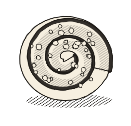
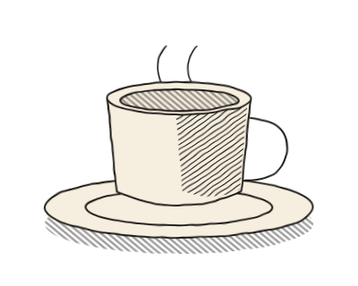
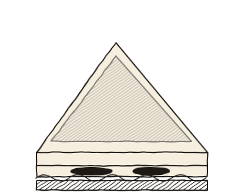

Espresso, cardamom buns and egg sandwiches, eight till three.
| Monday | closed |
| Tuesday | closed |
| Wednesday | 8 am – 3 pm |
| Thursday | 8 am – 3 pm |
| Friday | 8 am – 3 pm |
| Saturday | 8 am – 3 pm |
| Sunday | 8 am – 3 pm |
Find the counter24 Willow Street



Engravings drawn for this concept, not pictures of the café's food.